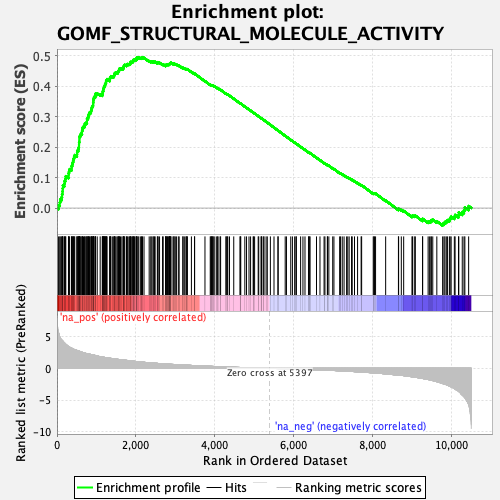
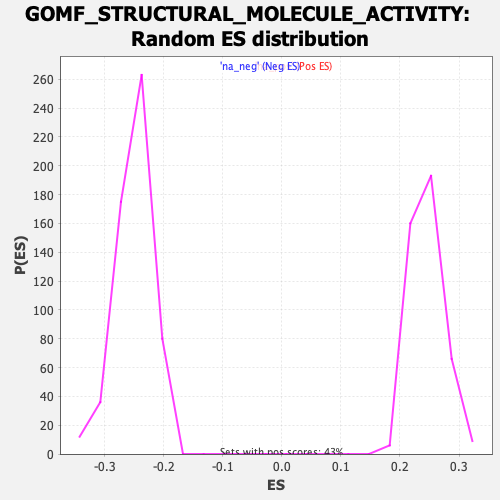

| Dataset | qlf.KOd4vsWTd4_gsea_score |
| Phenotype | NoPhenotypeAvailable |
| Upregulated in class | na_pos |
| GeneSet | GOMF_STRUCTURAL_MOLECULE_ACTIVITY |
| Enrichment Score (ES) | 0.49465424 |
| Normalized Enrichment Score (NES) | 2.0103626 |
| Nominal p-value | 0.0 |
| FDR q-value | 5.2146445E-4 |
| FWER p-Value | 0.062 |

| SYMBOL | RANK IN GENE LIST | RANK METRIC SCORE | RUNNING ES | CORE ENRICHMENT | |
|---|---|---|---|---|---|
| 1 | MRPL12 | 40 | 5.616 | 0.0094 | Yes |
| 2 | RPL7A | 71 | 4.969 | 0.0183 | Yes |
| 3 | RPL5 | 82 | 4.819 | 0.0287 | Yes |
| 4 | MRPL17 | 118 | 4.477 | 0.0359 | Yes |
| 5 | MRPL15 | 128 | 4.421 | 0.0455 | Yes |
| 6 | HOMER1 | 140 | 4.307 | 0.0546 | Yes |
| 7 | MRPS18B | 145 | 4.293 | 0.0644 | Yes |
| 8 | MRPS7 | 150 | 4.276 | 0.0742 | Yes |
| 9 | MRPL13 | 187 | 4.009 | 0.0802 | Yes |
| 10 | MRPS35 | 194 | 3.967 | 0.0890 | Yes |
| 11 | RSL24D1 | 212 | 3.885 | 0.0965 | Yes |
| 12 | MRPS25 | 223 | 3.781 | 0.1045 | Yes |
| 13 | TUBA4A | 291 | 3.452 | 0.1062 | Yes |
| 14 | EIF3A | 293 | 3.450 | 0.1142 | Yes |
| 15 | RPL7L1 | 305 | 3.392 | 0.1212 | Yes |
| 16 | SEH1L | 320 | 3.341 | 0.1278 | Yes |
| 17 | MRPL42 | 369 | 3.178 | 0.1306 | Yes |
| 18 | NUP54 | 371 | 3.178 | 0.1380 | Yes |
| 19 | MRPL20 | 386 | 3.131 | 0.1441 | Yes |
| 20 | RPS5 | 399 | 3.079 | 0.1502 | Yes |
| 21 | RPL6 | 410 | 3.044 | 0.1565 | Yes |
| 22 | RPL14 | 422 | 3.014 | 0.1625 | Yes |
| 23 | NUP35 | 435 | 2.970 | 0.1684 | Yes |
| 24 | RPL29 | 450 | 2.937 | 0.1740 | Yes |
| 25 | MRPL35 | 506 | 2.827 | 0.1753 | Yes |
| 26 | RPS6 | 510 | 2.817 | 0.1817 | Yes |
| 27 | RPS27A | 513 | 2.815 | 0.1882 | Yes |
| 28 | MRPL19 | 540 | 2.776 | 0.1922 | Yes |
| 29 | RPS4X | 548 | 2.760 | 0.1981 | Yes |
| 30 | RPL15 | 557 | 2.721 | 0.2038 | Yes |
| 31 | MRPL1 | 559 | 2.713 | 0.2101 | Yes |
| 32 | RPS2 | 561 | 2.712 | 0.2164 | Yes |
| 33 | MRPS15 | 568 | 2.693 | 0.2222 | Yes |
| 34 | RPL10 | 569 | 2.692 | 0.2286 | Yes |
| 35 | MRPS34 | 570 | 2.690 | 0.2350 | Yes |
| 36 | RPL3 | 590 | 2.636 | 0.2394 | Yes |
| 37 | CAPN3 | 606 | 2.607 | 0.2441 | Yes |
| 38 | RPS8 | 634 | 2.532 | 0.2475 | Yes |
| 39 | RPLP0 | 635 | 2.532 | 0.2535 | Yes |
| 40 | HIP1 | 645 | 2.516 | 0.2586 | Yes |
| 41 | TUBB6 | 649 | 2.514 | 0.2642 | Yes |
| 42 | PSMD11 | 672 | 2.468 | 0.2679 | Yes |
| 43 | RPL8 | 701 | 2.422 | 0.2709 | Yes |
| 44 | RPL7 | 704 | 2.420 | 0.2765 | Yes |
| 45 | MRPL49 | 730 | 2.355 | 0.2796 | Yes |
| 46 | MRPL55 | 759 | 2.309 | 0.2823 | Yes |
| 47 | NUP88 | 760 | 2.308 | 0.2878 | Yes |
| 48 | RPL36AL | 761 | 2.307 | 0.2933 | Yes |
| 49 | MRPL47 | 785 | 2.273 | 0.2964 | Yes |
| 50 | MRPS17 | 795 | 2.264 | 0.3009 | Yes |
| 51 | RPL35A | 800 | 2.259 | 0.3059 | Yes |
| 52 | MRPL28 | 814 | 2.241 | 0.3099 | Yes |
| 53 | RPS12 | 826 | 2.224 | 0.3141 | Yes |
| 54 | RPL23 | 858 | 2.189 | 0.3163 | Yes |
| 55 | RPS27L | 866 | 2.179 | 0.3208 | Yes |
| 56 | MRPS22 | 875 | 2.165 | 0.3251 | Yes |
| 57 | RPL27 | 882 | 2.152 | 0.3296 | Yes |
| 58 | MRPS18A | 892 | 2.133 | 0.3338 | Yes |
| 59 | MRPL32 | 912 | 2.114 | 0.3370 | Yes |
| 60 | MRPL11 | 916 | 2.112 | 0.3417 | Yes |
| 61 | RPL27A | 918 | 2.109 | 0.3466 | Yes |
| 62 | RPL22L1 | 922 | 2.102 | 0.3513 | Yes |
| 63 | MRPL2 | 924 | 2.102 | 0.3562 | Yes |
| 64 | CCDC6 | 933 | 2.082 | 0.3603 | Yes |
| 65 | RPL11 | 939 | 2.074 | 0.3648 | Yes |
| 66 | MRPL22 | 969 | 2.033 | 0.3667 | Yes |
| 67 | RPS9 | 975 | 2.022 | 0.3710 | Yes |
| 68 | MRPS33 | 978 | 2.015 | 0.3756 | Yes |
| 69 | NUTF2 | 1020 | 1.955 | 0.3763 | Yes |
| 70 | RPL12 | 1095 | 1.838 | 0.3734 | Yes |
| 71 | MRPL41 | 1149 | 1.785 | 0.3724 | Yes |
| 72 | RPS7 | 1153 | 1.780 | 0.3763 | Yes |
| 73 | RPL10A | 1160 | 1.770 | 0.3799 | Yes |
| 74 | RPL13 | 1162 | 1.769 | 0.3840 | Yes |
| 75 | LAD1 | 1175 | 1.753 | 0.3870 | Yes |
| 76 | TUBA1B | 1176 | 1.752 | 0.3912 | Yes |
| 77 | RPL21 | 1186 | 1.745 | 0.3944 | Yes |
| 78 | MRPL24 | 1193 | 1.738 | 0.3980 | Yes |
| 79 | RPS13 | 1205 | 1.722 | 0.4010 | Yes |
| 80 | RPL4 | 1216 | 1.713 | 0.4041 | Yes |
| 81 | MRPL51 | 1220 | 1.711 | 0.4078 | Yes |
| 82 | MRPS2 | 1237 | 1.691 | 0.4103 | Yes |
| 83 | MRPS31 | 1244 | 1.683 | 0.4137 | Yes |
| 84 | RPL18 | 1245 | 1.682 | 0.4177 | Yes |
| 85 | NDC1 | 1257 | 1.670 | 0.4206 | Yes |
| 86 | RPS11 | 1270 | 1.657 | 0.4233 | Yes |
| 87 | RPS26 | 1339 | 1.591 | 0.4204 | Yes |
| 88 | MRPL37 | 1341 | 1.590 | 0.4241 | Yes |
| 89 | RPS10 | 1344 | 1.589 | 0.4277 | Yes |
| 90 | RPL17 | 1358 | 1.576 | 0.4301 | Yes |
| 91 | RPL36A | 1368 | 1.566 | 0.4330 | Yes |
| 92 | RPS23 | 1412 | 1.528 | 0.4324 | Yes |
| 93 | CLTB | 1442 | 1.500 | 0.4331 | Yes |
| 94 | MRPL3 | 1447 | 1.497 | 0.4363 | Yes |
| 95 | RPL9 | 1458 | 1.491 | 0.4388 | Yes |
| 96 | MRPL16 | 1460 | 1.489 | 0.4423 | Yes |
| 97 | RPS16 | 1477 | 1.472 | 0.4442 | Yes |
| 98 | RPL28 | 1501 | 1.454 | 0.4454 | Yes |
| 99 | RPS15 | 1541 | 1.420 | 0.4449 | Yes |
| 100 | MRPL46 | 1550 | 1.411 | 0.4475 | Yes |
| 101 | RPS25 | 1558 | 1.403 | 0.4501 | Yes |
| 102 | MRPL43 | 1568 | 1.398 | 0.4526 | Yes |
| 103 | NEFH | 1582 | 1.386 | 0.4546 | Yes |
| 104 | NUP98 | 1583 | 1.385 | 0.4579 | Yes |
| 105 | RPLP1 | 1611 | 1.367 | 0.4585 | Yes |
| 106 | RPL19 | 1645 | 1.339 | 0.4584 | Yes |
| 107 | RPL35 | 1677 | 1.315 | 0.4585 | Yes |
| 108 | RPL38 | 1684 | 1.311 | 0.4610 | Yes |
| 109 | MRPS14 | 1689 | 1.309 | 0.4637 | Yes |
| 110 | NUP85 | 1694 | 1.306 | 0.4664 | Yes |
| 111 | RPS17 | 1703 | 1.299 | 0.4687 | Yes |
| 112 | MRPL30 | 1719 | 1.287 | 0.4703 | Yes |
| 113 | MRPL18 | 1763 | 1.256 | 0.4691 | Yes |
| 114 | PNN | 1772 | 1.248 | 0.4713 | Yes |
| 115 | RPL31 | 1785 | 1.241 | 0.4730 | Yes |
| 116 | MRPS24 | 1822 | 1.206 | 0.4724 | Yes |
| 117 | NID2 | 1842 | 1.190 | 0.4733 | Yes |
| 118 | VCL | 1858 | 1.178 | 0.4746 | Yes |
| 119 | RPS19 | 1859 | 1.177 | 0.4774 | Yes |
| 120 | MRPS9 | 1864 | 1.175 | 0.4798 | Yes |
| 121 | MRPS18C | 1895 | 1.157 | 0.4796 | Yes |
| 122 | RPL23A | 1911 | 1.142 | 0.4809 | Yes |
| 123 | MRPL21 | 1930 | 1.129 | 0.4818 | Yes |
| 124 | KRT19 | 1936 | 1.123 | 0.4840 | Yes |
| 125 | SEC31A | 1937 | 1.123 | 0.4866 | Yes |
| 126 | RPS3 | 1964 | 1.104 | 0.4867 | Yes |
| 127 | SPARC | 1978 | 1.096 | 0.4880 | Yes |
| 128 | RPS24 | 2008 | 1.073 | 0.4877 | Yes |
| 129 | RPL24 | 2021 | 1.060 | 0.4891 | Yes |
| 130 | RPS20 | 2022 | 1.060 | 0.4916 | Yes |
| 131 | MRPS5 | 2023 | 1.060 | 0.4941 | Yes |
| 132 | MRPL27 | 2051 | 1.041 | 0.4939 | Yes |
| 133 | MATR3 | 2073 | 1.024 | 0.4943 | Yes |
| 134 | COLQ | 2114 | 1.002 | 0.4928 | Yes |
| 135 | RPS14 | 2142 | 0.988 | 0.4925 | Yes |
| 136 | RPL37 | 2153 | 0.983 | 0.4938 | Yes |
| 137 | ROCK2 | 2169 | 0.974 | 0.4947 | Yes |
| 138 | RPL22 | 2207 | 0.951 | 0.4933 | No |
| 139 | MRPL23 | 2338 | 0.877 | 0.4826 | No |
| 140 | RPLP2 | 2380 | 0.860 | 0.4807 | No |
| 141 | CPOX | 2389 | 0.857 | 0.4819 | No |
| 142 | RPL39 | 2435 | 0.837 | 0.4795 | No |
| 143 | ACTG1 | 2441 | 0.835 | 0.4810 | No |
| 144 | RPL13A | 2472 | 0.817 | 0.4800 | No |
| 145 | DAG1 | 2489 | 0.807 | 0.4803 | No |
| 146 | CLDN18 | 2545 | 0.782 | 0.4768 | No |
| 147 | RPS18 | 2559 | 0.772 | 0.4774 | No |
| 148 | MRPS12 | 2563 | 0.770 | 0.4789 | No |
| 149 | NUP133 | 2601 | 0.757 | 0.4771 | No |
| 150 | NUP155 | 2677 | 0.729 | 0.4714 | No |
| 151 | RPSA | 2693 | 0.719 | 0.4717 | No |
| 152 | RPS28 | 2753 | 0.690 | 0.4675 | No |
| 153 | NUP214 | 2758 | 0.689 | 0.4688 | No |
| 154 | POM121 | 2767 | 0.687 | 0.4696 | No |
| 155 | NUP160 | 2771 | 0.685 | 0.4710 | No |
| 156 | TTN | 2791 | 0.676 | 0.4707 | No |
| 157 | GNL1 | 2801 | 0.671 | 0.4714 | No |
| 158 | RPL32 | 2821 | 0.661 | 0.4711 | No |
| 159 | NUP153 | 2836 | 0.657 | 0.4713 | No |
| 160 | UBA52 | 2849 | 0.650 | 0.4717 | No |
| 161 | RPS21 | 2853 | 0.648 | 0.4729 | No |
| 162 | MRPL36 | 2857 | 0.646 | 0.4742 | No |
| 163 | RPL36 | 2865 | 0.643 | 0.4750 | No |
| 164 | MRPL54 | 2873 | 0.639 | 0.4758 | No |
| 165 | KRT14 | 2886 | 0.633 | 0.4761 | No |
| 166 | RPL41 | 2888 | 0.631 | 0.4775 | No |
| 167 | NDUFA7 | 2942 | 0.615 | 0.4738 | No |
| 168 | MRPS16 | 2965 | 0.607 | 0.4731 | No |
| 169 | NUP93 | 2969 | 0.605 | 0.4742 | No |
| 170 | TUBGCP4 | 3000 | 0.595 | 0.4727 | No |
| 171 | RPS15A | 3029 | 0.587 | 0.4714 | No |
| 172 | TUBG2 | 3077 | 0.570 | 0.4681 | No |
| 173 | SNTB1 | 3098 | 0.560 | 0.4675 | No |
| 174 | SEC13 | 3192 | 0.528 | 0.4596 | No |
| 175 | RPL18A | 3196 | 0.527 | 0.4606 | No |
| 176 | NUP205 | 3229 | 0.517 | 0.4587 | No |
| 177 | MRPL14 | 3272 | 0.500 | 0.4557 | No |
| 178 | COL23A1 | 3279 | 0.497 | 0.4563 | No |
| 179 | NUP107 | 3296 | 0.492 | 0.4559 | No |
| 180 | NUP188 | 3307 | 0.489 | 0.4561 | No |
| 181 | RPS27 | 3409 | 0.458 | 0.4473 | No |
| 182 | MRPL44 | 3488 | 0.433 | 0.4407 | No |
| 183 | RPL34 | 3491 | 0.432 | 0.4415 | No |
| 184 | NUP62 | 3753 | 0.356 | 0.4168 | No |
| 185 | DCTN3 | 3887 | 0.320 | 0.4045 | No |
| 186 | SEC31B | 3903 | 0.316 | 0.4038 | No |
| 187 | BSN | 3917 | 0.313 | 0.4033 | No |
| 188 | RPS29 | 3927 | 0.310 | 0.4031 | No |
| 189 | SNTB2 | 3939 | 0.307 | 0.4028 | No |
| 190 | MRPS23 | 3957 | 0.301 | 0.4018 | No |
| 191 | MRPL4 | 3961 | 0.300 | 0.4023 | No |
| 192 | UPF3B | 4002 | 0.288 | 0.3990 | No |
| 193 | MPZL1 | 4050 | 0.276 | 0.3951 | No |
| 194 | TUFT1 | 4075 | 0.270 | 0.3934 | No |
| 195 | MRPS21 | 4084 | 0.268 | 0.3932 | No |
| 196 | TUBB4B | 4136 | 0.256 | 0.3888 | No |
| 197 | CD2AP | 4150 | 0.252 | 0.3882 | No |
| 198 | MARVELD1 | 4284 | 0.221 | 0.3757 | No |
| 199 | MRPL34 | 4294 | 0.219 | 0.3753 | No |
| 200 | KRT5 | 4320 | 0.214 | 0.3733 | No |
| 201 | MRPS11 | 4332 | 0.211 | 0.3728 | No |
| 202 | PSMD13 | 4375 | 0.200 | 0.3691 | No |
| 203 | TUBA1C | 4483 | 0.173 | 0.3591 | No |
| 204 | VPS25 | 4643 | 0.137 | 0.3438 | No |
| 205 | MAP4 | 4649 | 0.136 | 0.3436 | No |
| 206 | KRT15 | 4661 | 0.132 | 0.3429 | No |
| 207 | CLTC | 4764 | 0.112 | 0.3332 | No |
| 208 | TUBG1 | 4807 | 0.104 | 0.3293 | No |
| 209 | MRPS30 | 4870 | 0.093 | 0.3234 | No |
| 210 | COPE | 4910 | 0.087 | 0.3198 | No |
| 211 | EMILIN1 | 4975 | 0.074 | 0.3137 | No |
| 212 | TUBGCP3 | 4986 | 0.073 | 0.3129 | No |
| 213 | MRPL52 | 5012 | 0.068 | 0.3106 | No |
| 214 | COPG1 | 5103 | 0.051 | 0.3019 | No |
| 215 | COPG2 | 5117 | 0.048 | 0.3008 | No |
| 216 | ACTR2 | 5175 | 0.039 | 0.2953 | No |
| 217 | RPL37A | 5186 | 0.038 | 0.2944 | No |
| 218 | HSPB6 | 5197 | 0.035 | 0.2935 | No |
| 219 | MRPL10 | 5244 | 0.029 | 0.2891 | No |
| 220 | DLG4 | 5247 | 0.028 | 0.2889 | No |
| 221 | COPB1 | 5303 | 0.018 | 0.2836 | No |
| 222 | STX2 | 5334 | 0.013 | 0.2807 | No |
| 223 | AGRN | 5412 | -0.003 | 0.2732 | No |
| 224 | DAP3 | 5504 | -0.016 | 0.2643 | No |
| 225 | MRPL57 | 5604 | -0.033 | 0.2547 | No |
| 226 | COPA | 5609 | -0.034 | 0.2544 | No |
| 227 | TPM4 | 5788 | -0.063 | 0.2371 | No |
| 228 | TUBB4A | 5820 | -0.067 | 0.2342 | No |
| 229 | ERC1 | 5929 | -0.085 | 0.2238 | No |
| 230 | COL11A2 | 5971 | -0.092 | 0.2200 | No |
| 231 | MRPL9 | 6028 | -0.102 | 0.2148 | No |
| 232 | ACTB | 6060 | -0.108 | 0.2120 | No |
| 233 | COPB2 | 6072 | -0.110 | 0.2112 | No |
| 234 | DLG1 | 6179 | -0.129 | 0.2011 | No |
| 235 | CSRP1 | 6238 | -0.143 | 0.1958 | No |
| 236 | ARPC5 | 6290 | -0.153 | 0.1911 | No |
| 237 | YEATS4 | 6380 | -0.172 | 0.1828 | No |
| 238 | ARPC4 | 6392 | -0.176 | 0.1822 | No |
| 239 | ACTR3 | 6399 | -0.179 | 0.1820 | No |
| 240 | MACF1 | 6419 | -0.183 | 0.1806 | No |
| 241 | TUBD1 | 6582 | -0.220 | 0.1652 | No |
| 242 | CRELD1 | 6670 | -0.242 | 0.1573 | No |
| 243 | CSRP2 | 6774 | -0.267 | 0.1478 | No |
| 244 | TPR | 6796 | -0.273 | 0.1464 | No |
| 245 | SPTB | 6857 | -0.290 | 0.1412 | No |
| 246 | SRBD1 | 6861 | -0.291 | 0.1416 | No |
| 247 | MBP | 6895 | -0.300 | 0.1391 | No |
| 248 | TUBE1 | 6993 | -0.328 | 0.1304 | No |
| 249 | CRYBG3 | 7024 | -0.336 | 0.1282 | No |
| 250 | LMNB1 | 7169 | -0.377 | 0.1150 | No |
| 251 | HMGCL | 7192 | -0.383 | 0.1138 | No |
| 252 | CLDN10 | 7235 | -0.393 | 0.1106 | No |
| 253 | CLTA | 7281 | -0.408 | 0.1072 | No |
| 254 | MRPL33 | 7345 | -0.434 | 0.1020 | No |
| 255 | MYLPF | 7375 | -0.444 | 0.1002 | No |
| 256 | NPHP4 | 7410 | -0.457 | 0.0980 | No |
| 257 | ODF2 | 7471 | -0.480 | 0.0933 | No |
| 258 | DST | 7487 | -0.486 | 0.0929 | No |
| 259 | CROCC | 7546 | -0.510 | 0.0885 | No |
| 260 | KRT10 | 7624 | -0.540 | 0.0822 | No |
| 261 | NEBL | 7714 | -0.576 | 0.0749 | No |
| 262 | MRPS6 | 7727 | -0.581 | 0.0751 | No |
| 263 | APOE | 8021 | -0.702 | 0.0480 | No |
| 264 | ARPC2 | 8037 | -0.708 | 0.0482 | No |
| 265 | UPF3A | 8054 | -0.716 | 0.0484 | No |
| 266 | TLN1 | 8080 | -0.729 | 0.0476 | No |
| 267 | CD4 | 8336 | -0.860 | 0.0247 | No |
| 268 | ACTN1 | 8660 | -1.065 | -0.0044 | No |
| 269 | CTNNA1 | 8665 | -1.069 | -0.0023 | No |
| 270 | NUMA1 | 8733 | -1.107 | -0.0062 | No |
| 271 | TPM1 | 8793 | -1.138 | -0.0093 | No |
| 272 | MSN | 9004 | -1.323 | -0.0267 | No |
| 273 | VILL | 9016 | -1.330 | -0.0246 | No |
| 274 | ARPC3 | 9062 | -1.370 | -0.0258 | No |
| 275 | LMNTD2 | 9089 | -1.396 | -0.0250 | No |
| 276 | MYL6 | 9271 | -1.587 | -0.0390 | No |
| 277 | KRT222 | 9275 | -1.592 | -0.0355 | No |
| 278 | LLGL1 | 9413 | -1.746 | -0.0448 | No |
| 279 | ARPC1B | 9445 | -1.790 | -0.0436 | No |
| 280 | ISG15 | 9481 | -1.846 | -0.0426 | No |
| 281 | JUP | 9496 | -1.874 | -0.0395 | No |
| 282 | TUBB2A | 9531 | -1.918 | -0.0383 | No |
| 283 | PANX1 | 9634 | -2.093 | -0.0434 | No |
| 284 | SMTN | 9781 | -2.383 | -0.0520 | No |
| 285 | SPTAN1 | 9814 | -2.456 | -0.0493 | No |
| 286 | MAP7 | 9839 | -2.492 | -0.0457 | No |
| 287 | KLHL3 | 9874 | -2.565 | -0.0430 | No |
| 288 | HMOX1 | 9903 | -2.617 | -0.0395 | No |
| 289 | FBLN1 | 9952 | -2.782 | -0.0376 | No |
| 290 | SPTBN1 | 9971 | -2.844 | -0.0326 | No |
| 291 | ECM1 | 9997 | -2.902 | -0.0282 | No |
| 292 | TUBB2B | 10078 | -3.187 | -0.0285 | No |
| 293 | NCMAP | 10097 | -3.244 | -0.0226 | No |
| 294 | AHNAK | 10184 | -3.606 | -0.0224 | No |
| 295 | MFGE8 | 10191 | -3.630 | -0.0144 | No |
| 296 | VIM | 10279 | -4.196 | -0.0130 | No |
| 297 | TUBA1A | 10323 | -4.462 | -0.0066 | No |
| 298 | PLEC | 10345 | -4.624 | 0.0023 | No |
| 299 | ADD3 | 10441 | -5.713 | 0.0066 | No |
